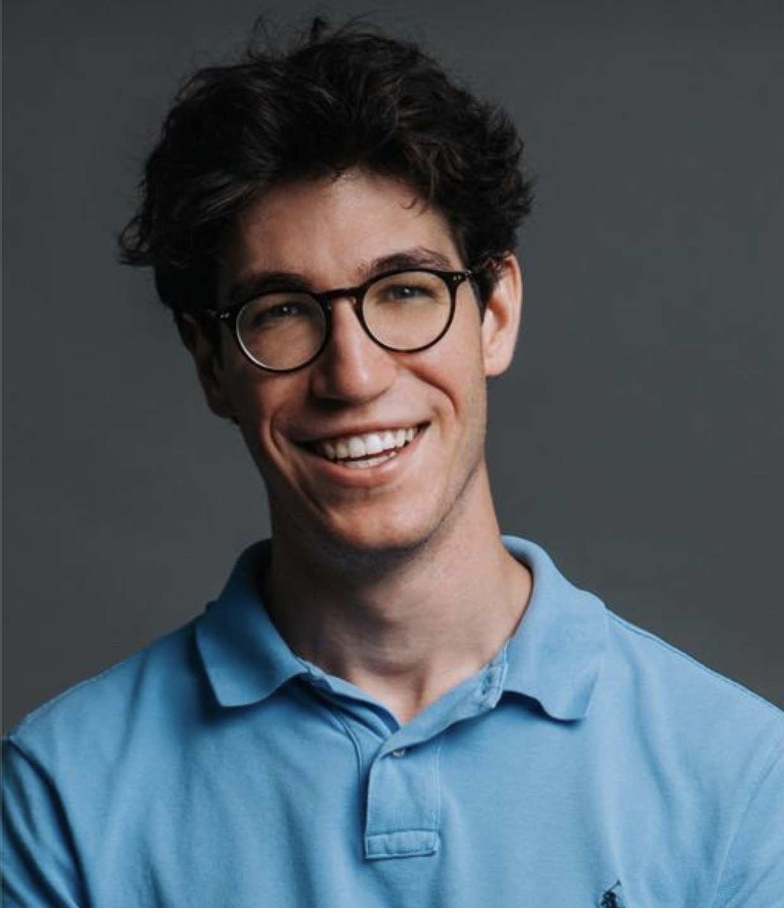

I'm a PhD researcher at Stanford, working under Prof. Barbara Block at the intersection of machine learning, oceanography, and underwater sensing, reconstructing what happens beneath the surface from the animals and robots that move through the ocean and the satellites that watch it from above. But I'm a builder at heart. Before Stanford I spent four years designing ocean sensors and vessel monitoring systems deployed on thousands of commercial vessels worldwide, and what drives me is building the systems themselves: the sensors, the underwater autonomy, and the ML for ocean science and the maritime domain.
I led the product team at BlueTraker until starting my PhD, where I built the machine learning systems behind its fishing-effort detection, which now classify vessel behavior from raw sensor data across more than 10,000 vessels in 18 countries, turning ordinary fishing fleets into a near-real-time compliance and ocean-monitoring network. I'm drawn to dual-use maritime technology and the autonomy and sensing that increasingly decide who can see and operate in the deep.
On the research side, I use machine learning to turn sparse, noisy ocean signals into a picture of what is happening below, combining physics-informed neural networks, graph neural networks, and foundation models with data from floats, gliders, satellites, and marine-predator biologging. I'm grateful to Prof. Jure Leskovec for the occasional advice as I bring graph-based methods into ocean science.
I earned an MSc in Machine Learning and Data Science at KTH Royal Institute of Technology in Stockholm, where my work included a reproducibility study, [Re] Latent Weights Do Not Exist: Rethinking Binarized Neural Network Optimization.
When I'm not building, I'm usually surfing, on the golf or tennis court, or chasing backcountry lines in winter. Always happy to talk ocean, climate, and AI, so reach out!
Ocean robotics and underwater autonomy; foundation models; ocean sensing; biologging; physics-informed neural networks; machine learning for sustainability; data assimilation; and dual-use maritime technology.
| Jun 2025 | Presented our work on fishing vessels as ocean data platforms at the UN One Ocean Science Congress in Nice, France. |
|---|---|
| Apr 2025 | Invited talk at Stanford GSB, The Missing Piece: How Fishing Fleets Can Complete Our Ocean Observing System. |
| Sep 2024 | Started my PhD at Stanford, joining Prof. Barbara Block's lab. |
| Sep 2024 | Keynote at GZS Innovation Day following BlueTraker's national innovation award for marine sensor systems. |